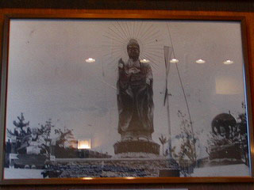
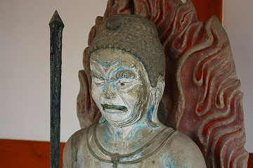

別府である。泉都である。
別府に来たからには秘宝館や変な寺も結構だが何はともあれ地獄と温泉なのである。
あと明礬温泉の地獄蒸しプリンね。
てなわけで別府をウロウロしていて思い出したのがこちら。
金龍地獄である。
ここは前回(2002年）別府を訪れた際立ち寄ったのだが、昭和10年建立というオールドスクール大仏がいる地獄なのだ。
大仏のほかにも湯煙を吐く龍、風神雷神、如来像など数多くのコンクリ仏がひしめいていたのが印象的な寺、じゃなくて地獄であった。
この大仏、以前は写真のような姿をしていたのだが台風で破損し、今の姿になったという。

で、気になるのは足元の二体のコンクリ像。
左の弘法大師は現在も金龍地獄に残っている。
一方大仏さんの右側にいた千手観音らしき座像はひょうたん温泉に移転したとある。
先の弘法大師もそうなのだが、写真で見る限りこの千手観音はかなり良い感じのコンクリ仏っぽいように見える。
いうなればコンクリ仏の特質を生かし切ったややポンチで親しみあるテイストを存分に醸し出しているように見受けられるのだ。
というわけで今回はひょうたん温泉にこの千手観音を探しに行くことにした。
もちろん温泉に浸かるのもやぶさかではないよ。
（後日談；金龍地獄は現在閉鎖され、管理物件となっております。2022.1.談））
というわけでひょうたん温泉。
ひょうたん温泉といえばかつてはこのようなユニークな建物があった。
その名をひょうたん閣といい、昭和3年に建てられた展望台だ。
残念ながら昭和20年に取り壊されたのだが、18メートルで7階建てのこの塔は当時さぞかし異彩を放っていた事であろう。
何たってひょうたんの形で7階建てですよ。
金龍地獄の大仏、別府大仏、八幡地獄怪物館、そしてこのひょうたん閣…
別府は戦前から珍スポット多発地帯だったのだ。
21世紀の現在、このひょうたん温泉はあのミシュランが星付き観光地として紹介してしまったゆえ、外国人観光客が大勢押し寄せる一大メジャー温泉施設となっている。
打たせ湯や露天風呂、セルフ式温泉玉子や砂風呂などなど、確かに初めて別府に訪れたらまずココに行け、的な温泉エッセンス満載の施設なのだ。
で、ここからがホントの本題です(前説長いね〜）。
ひょうたん温泉の駐車場の一画に小さなお堂がある。
まだ出来たばっかりっぽいお堂の中を覗くと三体の仏像が。
むむむ。
中央に不動明王、右は聖観音なのだろう。左は…何？
立派なコンクリ仏である。

お堂の前にある説明版を見るとここの温泉の由来が記されている。
その中で創業者の河野順作が水野信山という仏師に薬師如来や不動明王などを作らせた、という記述がある。
状況からいってこのお堂の不動明王のことを指しているのだろう。
ということは左右の2体も仏像も同じ作者と見て問題は無かろう。
水野信山という仏師の詳細は判らないが、他には貴船城のレリーフなども手掛けているという。
貴船城とは別府を見下ろす高台に建つあやしい城で、何故か白蛇を御神体とする教団の宗教施設なのだが、今調べてみたらホームページが無くなっちゃってますね…
以前訪れた時はこんな感じでした。
尚、内部の様子はこちらのサイトさんに詳しく出てました。
これは昭和20年代の水野氏の写真である。時代からするとチョット只者じゃないオーラを放っているように思える。
尚、女風呂にはこのような↓素敵なコンクリ仏があったみたい。これも水野氏作か。
かくして泉都別府にも立派なコンクリ仏師の存在を確認する事が出来た。
昭和初期にコンクリ仏が日本全国で同時多発的に発生した事実をここでも補強する事が出来て大変満足である。
惜しむらくはこの水野氏の詳細が不明な事。
大分におけるコンクリ仏シーンの中心人物と目されるゆえ今後の重要な課題となろう。
みなさんも別府に赴く機会があったら温泉街の片隅やお寺の境内にひっそりとコンクリ仏が佇んでいる可能性があるので、湯煙にのぼせることなく細心の注意を払っていただきたき候。
と、いうわけで別府コンクリ仏のお話はひとまずおしまい。
おまけ
ホントはもっと続けようかと思ったのだが「いつになったら大分シリーズ終わんだよ！」との声も聞こえてきそうなので残りはダイジェスト、ということでパパッと紹介します。どれも面白かったよ。
やよい天狗
別府の商店街の一画に何故か大天狗の神輿が。
御丁寧に下駄まで供えてある。

由来書きをみると昭和48年に商店街の火災厄除けとして作られたとあるが、かつてこの商店街の入口にあった古い建物に天狗のレリーフがあったことに由来するそうで。
ちなみにそのコンクリ製の天狗像は中国のある人物がつくったもので、現在宇佐神宮に現存しているとか。
なお、別府にもビリケンさんがいるのだが、そのビリケンさんをつくったのもその人物だそうな。
（参考；別府見遊自編）
ラクテンチ
持ち主や名前が次々と変わりつつ尚も延命し続け、気がつけば80周年という遊園地界の森光子、ラクテンチ。
この光景もいつまで見ることが出来るのやら。
そんなラクテンチの一画にある天国と…

…バブル地獄…
地獄というのはハリボテの岩から噴出する湯煙のことのようだ。
バブル地獄かぁ〜。
ここ数年のラクテンチの来歴を鑑みるに自虐ネタとしか思えないぞ…
というツッコミも虚しくなるよな脱力感ムンムンな地獄極楽でした。
脇に控えるは天国大観音。
そもそも天国で観音ってヘンじゃね？
あ、大観音といってもご覧の通り。チビッコよりはチョット大きいけどパパと良い勝負。下手すりゃパパの方が大きいかも。
まあ、ここが無人地獄にならない事を祈るばかりです。
大谷会館、大谷公園
別府の鉄輪温泉に大谷公園という公園がある。
以前は殺風景な公園だったが、近年整備されて足湯まで出来ちゃってた（画像は2002年のもの）。
ここは浄土真宗本願寺派22代門主、大谷光瑞が1948年に亡くなった地である。
大谷光瑞といえば中央アジアを探検した探検家でもあり、築地本願寺をダチの伊藤忠太に設計させたり須磨の伝説の超豪邸二楽荘を建てたりと、やる事なす事いちいちグレートだった人物である。
仏教界の風雲児だった光瑞の業績を顕彰する記念碑が建っている。
となりの大谷会館は民宿として一般の客も利用できるとか。
凄く安かったけど雰囲気ありすぎで泊まるガッツはありませんでした…
別府温泉保養ランド
別府で一番オススメの温泉は？と聞かれたら竹瓦温泉、高等温泉、あるいはひょうたん温泉あたりを推すのが無難なところだろうが、も少しディープな体験を所望される方にはこちらの温泉をオススメしたい。
館内のあちこちに掲げられるビビッドな色使いの注意書き。
そしてどこに入れたらいいのか迷う、スリル満点のコインロッカー。
温泉案内のサイトじゃないんで詳しくは記さないが、ここは相当異空間な温泉です。
なぜかって？…教えない。ただ言える事は泉質も含めてかなりディープだということ。
そして私の中では再び訪れたい温泉ベスト5に堂々ランクインしていたりする。
興味がある人は是非行ってみて下さい。
（後日談；ロシアンルーレットのようなロッカーは亡くなってました。代わりに受付ロビーに新しくコインロッカーが設置されてます。それ以外は…以前とほとんど変わりませんでした(笑)2022.1.談）
ところかわって犬飼。
大分に行っていた当時、映画デトロイトメタルシティーが公開されていた。
その映画の中でも出てくる主人公の故郷犬飼(原作者の故郷でもある）。
泣けてくるほど何もない田舎町だった。
写真は犬飼のプランタンと称されるスーパーあべよし。
城山鬼子母神
豊後高田市街にある城山鬼子母神。6年ぶりの再訪となる。
初めてココを発見したときは日本にこんな素敵な巨像があるのか！と驚いたものだ。
大分のタウン誌conkaによると作者の阿部さんは近くにある日本一の仁王像の作者でもあるという。
←コレね→
ここにもまだ見ぬコンクリ仏師の存在が。
宇佐の長洲地区の墓地。
精霊送りが行われた翌々日の様子である。
一昨日には数多くの絢爛豪華な御殿燈籠がお祭り騒ぎの中、昇天したであろうその場所はひっそりとしていた。
以前（2003年）訪問した際には無かったが、御殿燈籠を燃やす共同スペースが出来ていた。
確かに一軒一軒墓地を広く取って燃やすよりもこの方が効率的ではあろう。味気ないけどこれから新規の墓地を作る際には昔ながらの広い墓地を確保することはまず不可能だろうから、仕方あるまい。
子供の霊を供養しているのだろう。オモチャが一箇所にまとめられていた。
六地蔵にははちきれんばかりの献花。そして大量のロウソク。
以前来た時はこの六地蔵にあまりにも大量にロウソクがあげられており、物凄い火柱が立っていてビックリしたが、その数秒後には他の火柱がもっと凄かったのでこの日このお地蔵さんを見るまでその事を忘れてました…
伝統的な墓地ではこのように自分の墓所の中で御殿燈籠を燃やす。
燃え跡には大量の巻かれた針金が。恐らく提灯の骨組みなのだろう。
大分県で、いや、日本でも有数のホットな盆行事だけに今後も続けてもらいたいものである。
おしまい
2008.08.
珍寺大道場 HOME